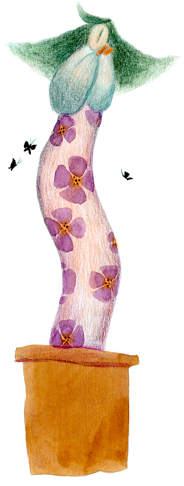
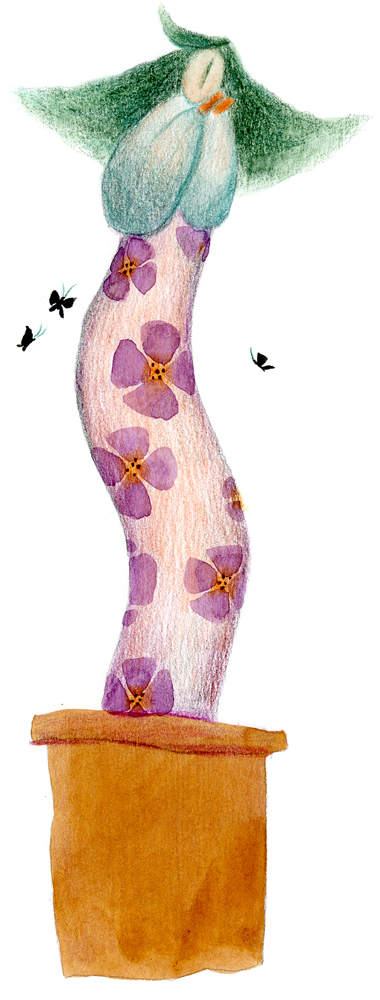

How did evil evolve,and why did it persist?
By Lucy Jones
4 April 2016
本站簡介 |
加入會員 |
Google |
聯絡我 |
Home |

 

Evil, it can seem, is all around us. Hitler. The Rwandan genocide. Ted Bundy. Every time you read the news or watch television, bad behaviour that causes harm is on display.
Is being evil advantageous in some scenarios?
These days, the word ‘evil’ has religious connotations. It’s tied up with morality and transgressions against the will of a divine being. But in its original Old English it meant anything that was simply bad, vicious or cruel.
Assuming we stick to this broader non-religious definition – that evil involves acting in a malevolent way – it’s reasonable to ask why it came into existence. We know that humans evolved from apes and, ultimately, from much simpler animals. That means we get many of our behaviours from our animal ancestors. Does this include evil behaviours – and if it does, is this because being evil is advantageous in some scenarios?
Or to put it another way, can we trace the evolution of evil?
There are many different definitions of the ‘nature of evil’ but we will define it as acts that cause intentional suffering, destruction or damage to B for the benefit of A. To explore further, we can break down those intentional actions into four basic categories: the Dark Tetrad.
Machiavellianism involves using intelligent strategy and cunning to gain power and get one up on a rival
A group of psychologists including Del Paulhus at the University of British Columbia and his student, Kevin Williams, first came up with these categories about 15 years ago. Initially they defined a Dark Triad, which included Machiavellianism (manipulative, self-interested, deceptive), Psychopathy (antisocial, remorseless, callous) and Narcissism (grandiose, proud, lacking empathy). Paulhus later extended the Triad to a Tetrad, to include Everyday Sadism (the enjoyment of cruelty). Why do these behaviours exist in humans? And can they be seen in other animals?
Machiavellianism
Machiavellianism involves using intelligent strategy and cunning to gain power and get one up on a rival. It is a normal part of political life, of course – even if the individuals playing politics aren’t human.
Every individual monkey seems to have the capacity for Machiavellian behaviour
Dario Maestripieri of the University of Chicago has found intriguing, Machiavellian-like behaviours in rhesus monkey societies during his studies over 20 years. Alpha males engaged in threatening behaviour and violent tactics to protect sleeping spaces, females and food.
The dominant monkeys used unpredictable bursts of aggression to rule over subordinates. Alliances were formed and female monkeys looked out for their own daughters by mating with the alpha male – but they also mated with other males behind his back to ensure they would be protected if the alpha male died or was deposed.
In fact, every individual monkey seems to have the capacity for Machiavellian behaviour, says Maestripieri. "It's part of who they are. It's not that there are Machiavellian individuals that do it all the time and others who never do it. Just like humans, it's part of our nature, which doesn't mean we have to do it all the time."